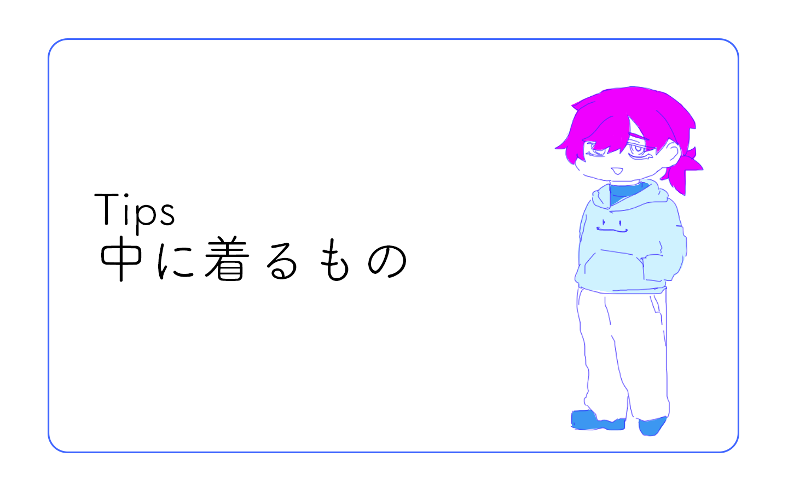

基礎知識QA Tips 中に着るもの

ウエアは気に入ったものを見つけたけど、インナーって何を着るべき？
って人向けのTipsです
私はいつもウエアの下に上から被るタイプのパーカーを着用してます。
フードがあると吹雪いた時に被って耳を保護できるのでいいです
あとは、普段着ている冬服をインナーに着ることが多いです。スキーに行く時は泊まりで行くため、一日目の部屋着を兼任してたりします。（真冬なら、二日目も同じインナーを着ることもあります。）
スキー板とブーツを持っていくとなると、他の荷物を極力減らしたい...重いので
あとは下にヒートテックとTシャツを着てます。特に春のスキーは汗かくので薄手のTシャツは必須です。

あったかいと軽いが両立するといいですよ。あとは着慣れたものがいいです！自分の気持ちもアガります